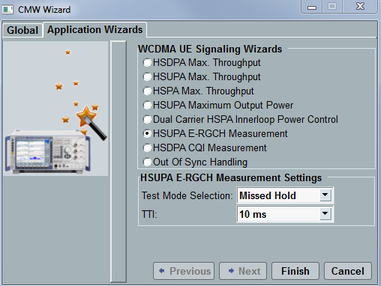

The WCDMA wizards provide predefined signal settings for HSPA tests.
To open the wizard dialog, press the [WIZARD] key at the front panel or use the keyboard shortcut CTRL + W.
As a result, the "CMW Wizard" dialog opens. The tab "Application Wizards" is related to the currently displayed firmware application, so display the main view of the WCDMA signaling application before opening the dialog.
Wizard is suspended during active call. |

Before executing a wizard, perform the following steps:
Select the scenario.
Register the UE.
Select one set of predefined settings
Selects and executes a wizard to apply the predefined set of WCDMA settings.
- For the wizard "HSDPA Max. Throughput", specify a UE HSDPA category. Use the value reported by the UE or set it manually.
- For the wizard "HSUPA Max. Throughput", specify a UE HSUPA category. Use the value reported by the UE or set it manually.
- For the wizard "HSPA Max. Throughput", specify a UE HSDPA and HSUPA categories. Use the values reported by the UE or set them manually.
- For the wizard "HSUPA Maximum Output Power", specify a subtest.
- For the wizard "HSUPA E-RGCH", specify test mode and TTI.
To execute the selected wizard, use the button "Finish".
For a list of configured parameters, see "WCDMA Wizards".
Option R&S CMW-KS411 is required.
The wizard for dual carrier HSPA inner loop power control is only available if a scenario with dual uplink carrier is selected. Option R&S CMW-KS405 is also required.
Remote command: